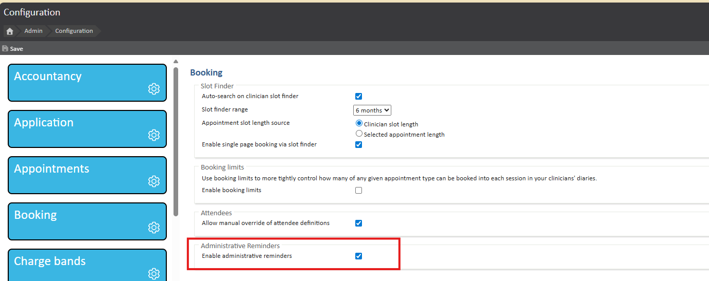
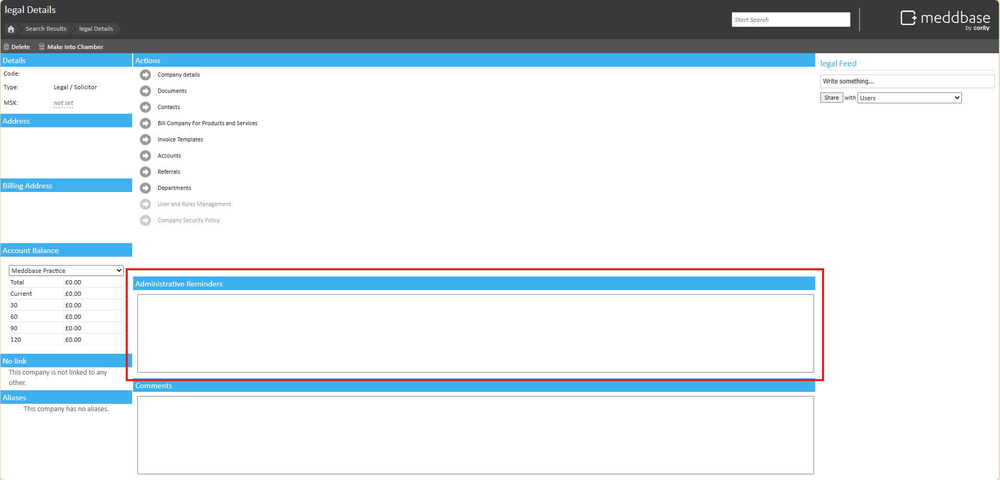
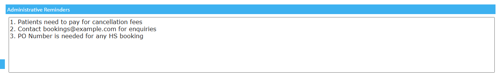
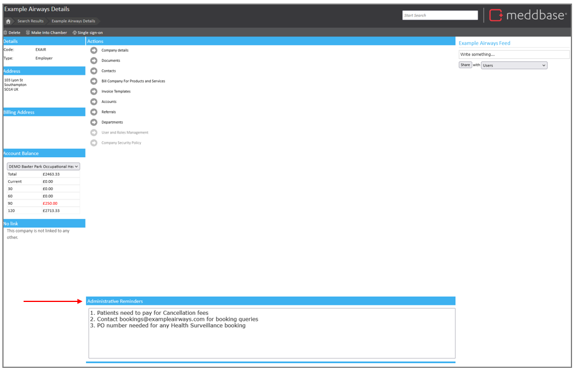
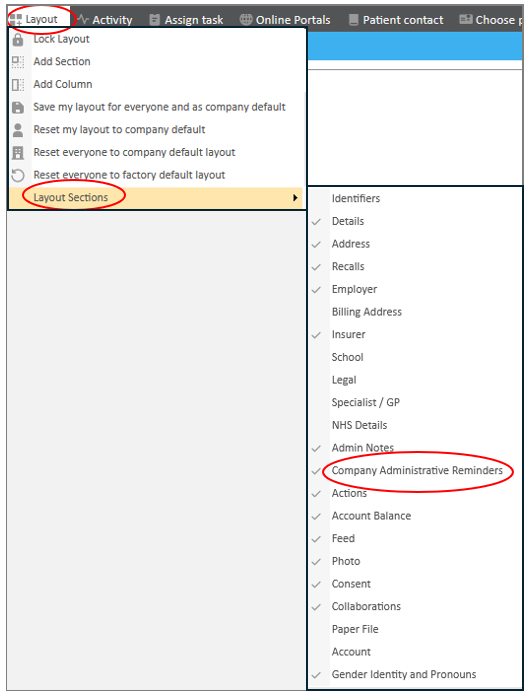
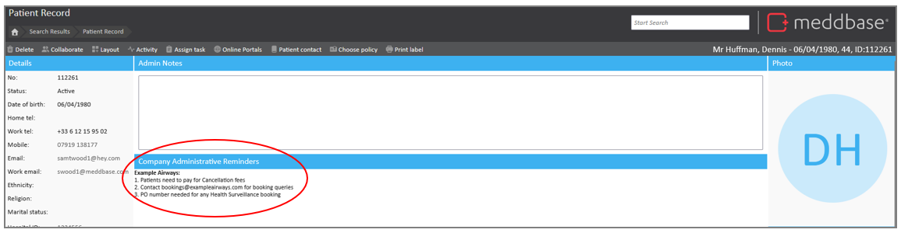
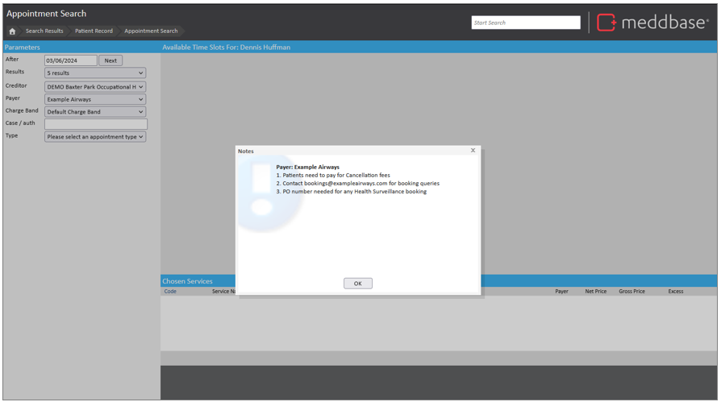
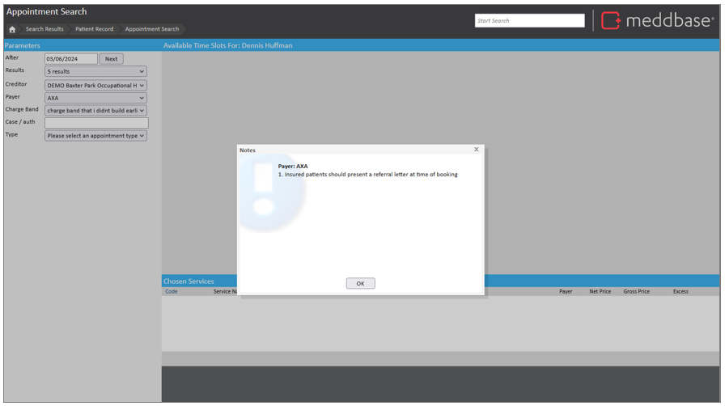
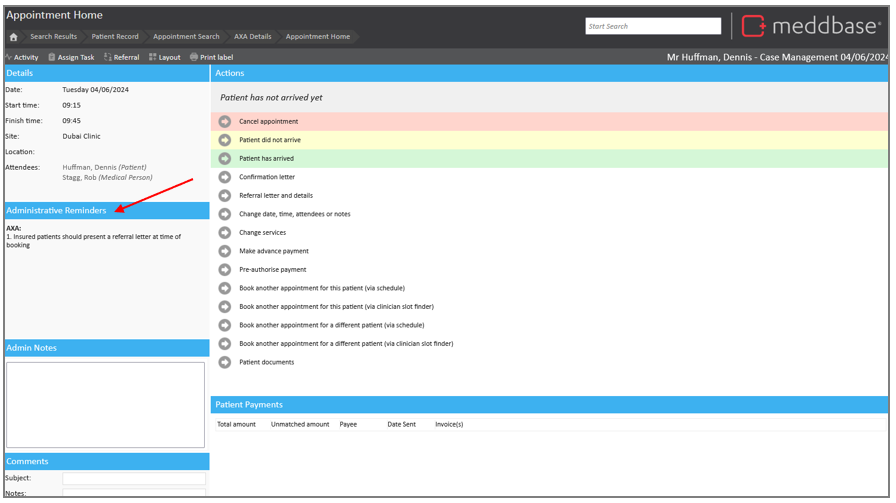
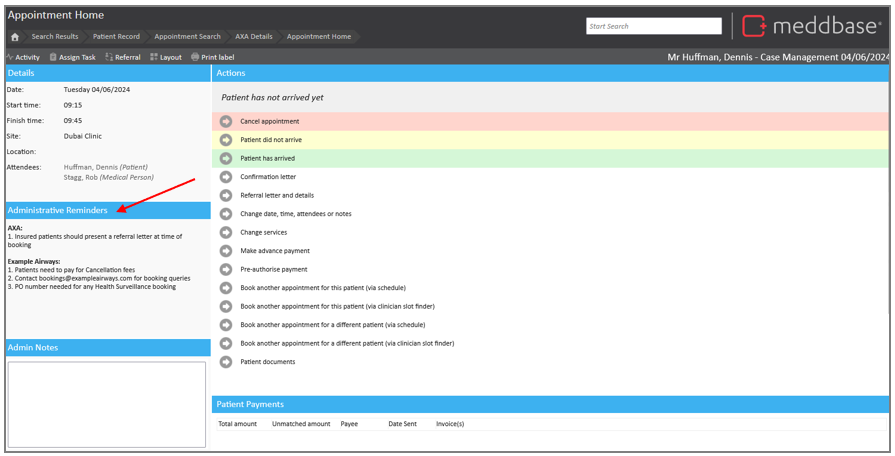

Administrative reminders are designed to act as prompts during the booking process for patients linked to a specific company. These reminders ensure that booking operators are aware of any special instructions related to patients without the need for data capture. In these cases, it is useful to be able to present relevant information before an appointment slot is chosen.
To enable this feature, go to Admin > Configuration > Booking and enable administrative reminders.

Once Administrative Reminders are enabled, you can create and manage them as follows:
1. Company Record pages will have a new section titled Administrative Reminders.

2. You can enter free text into this field, including line breaks and other formatting.

3. The text entered saves automatically when you 'blur' or click out of the field, eliminating the need for manual saving.
Administrative reminders can be viewed in four locations:







Administrative Reminders provide a method for conveying important booking-related instructions to operators, ensuring that all relevant information is readily available during the booking process. This improves the overall coordination and communication between booking operators and clients.